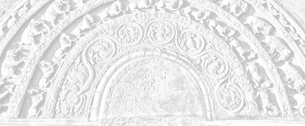

Sermon 8
Namo tassa bhagavato arahato sammāsambuddhassa
Namo tassa bhagavato arahato sammāsambuddhassa
Namo tassa bhagavato arahato sammāsambuddhassaEtaṁ santaṁ, etaṁ paṇītaṁ,
yadidaṁ sabbasaṅkhārasamatho sabbūpadhipaṭinissaggo
taṇhakkhayo virāgo nirodho nibbānaṁ.1“This is peaceful, this is excellent,
namely the stilling of all preparations, the relinquishment of all assets,
the destruction of craving, detachment, cessation, extinction.”
With the permission of the Most Venerable Great Preceptor and the assembly of the venerable meditative monks.
The other day we ended our sermon by discussing how far the Brahmanimantanikasutta of the Majjhima Nikāya helps us to understand what anidassana viññāṇa is. We quoted a certain paragraph from that discourse as a starting point for our discussion. Let us now remind ourselves of it:
Viññānaṁ anidassanaṁ anantaṁ sabbato pabhaṁ, taṁ paṭhaviyā paṭhavittena ananubhūtaṁ, āpassa āpattena ananubhūtaṁ, tejassa tejattena ananubhūtaṁ, vāyassa vāyattena ananubhūtaṁ, bhūtānaṁ bhūtattena ananubhūtaṁ, devānaṁ devattena ananubhūtaṁ, pajāpatissa pajāpatittena ananubhūtaṁ, brahmānaṁ brahmattena ananubhūtaṁ, ābhassarānaṁ ābhassarattena ananubhūtaṁ, subhakiṇhānaṁ subhakiṇhattena ananubhūtaṁ, vehapphalānaṁ vehapphalattena ananubhūtaṁ, abhibhussa abhibhuttena ananubhūtaṁ, sabbassa sabbattena ananubhūtaṁ.2
Consciousness which makes nothing manifest, infinite and all lustrous. It does not partake of the earthiness of earth, the wateriness of water, the fieriness of fire, the airiness of air, the creature-hood of creatures, the deva-hood of devas, the Pajāpati-hood of Pajāpati, the Brahma-hood of Brahma, the radiance of the Radiant Ones, the Subhakiṇha-hood of the Subhakiṇha Brahmas, the Vehapphala-hood of the Vehapphala Brahmas, the overlord-ship of the overlord, and the all-ness of the all.
The gist of this paragraph is that the non-manifestative consciousness which is infinite and all lustrous, is free from the qualities associated with any of the concepts in the list, such as the earthiness of earth and the wateriness of water.
That is to say it is not under their influence, it does not partake of them, ananubhūtaṁ. Whatever nature the world attributes to these concepts, whatever reality they invest it with, that is not registered in this non-manifestative consciousness. That is why this consciousness is said to be uninfluenced by them.
Usually, the worldlings attribute a certain degree of reality to concepts in everyday usage. These may be reckoned as mind-objects, things that the mind attends to. The word dhamma also means ‘a thing’, so the worldling thinks that there is some-‘thing’ in each of these concepts. Or, in other words, they believe that there is some-thing as an inherent nature or essence in these objects of the mind.
But the quotation in question seems to imply that this so-called nature is not registered in the arahant’s mind. It is extremely necessary for the worldling to think that there is some real nature in these mind-objects. Why? Because in order to think of them as objects they have to have some essence, at least they must be invested with an essence, and so the worldlings do invest them with some sort of an essence, and that is the earthiness of earth, the wateriness of water, (etc.). Likewise there is a being-hood in beings, a deva-hood in devas, a Pajāpati-hood in Pajāpati, a Brahma-hood in Brahma, so much so that even in the concept of all, there is an all-ness – and this is the worldlings’ standpoint.
Attributing a reality to whatever concept that comes up, the worldlings create for themselves perceptions of permanence, perceptions of the beautiful, and perceptions of self. In other words, they objectify these concepts in terms of craving, conceit and views. That objectification takes the form of some inherent nature attributed to them, such as earthiness, deva-hood (etc.).
But as for the non-manifestative consciousness, it is free from the so-called natures that delude the worldlings. In the consciousness of the arahants, there is not that infatuation with regard to the mass of concepts which the worldlings imagine as real, in order to keep going this drama of existence.
This fact is clearly borne out by another statement in the Brahmanimantanikasutta. The Buddha makes the following declaration, to break the conceit of Baka the Brahma, who conceived the idea of permanence regarding his status as a Brahma:
Paṭhaviṁ kho ahaṁ, brahme, paṭhavito abhiññāya yāvatā paṭhaviyā paṭhavittena ananubhūtaṁ tadabhiññāya paṭhaviṁ nāhosim, paṭhaviyā nāhosiṁ, paṭhavito nāhosiṁ, paṭhaviṁ me’ti nāhosiṁ, paṭhaviṁ nābhivadiṁ3
“Having understood through higher knowledge earth as earth, O Brahma,”
(that is to say having understood by means of a special kind of knowledge, and not by means of the ordinary sense-perception)
“and having understood through higher knowledge whatever that does not partake of the earthiness of earth”,
(the reference here is to that non-manifestative consciousness, which is to be described in the passage to follow)
“I did not claim to be earth”, paṭhaviṁ nāhosim,
“I did not claim to be on earth”, paṭhaviyā nāhosiṁ,
“I did not claim to be from earth”, paṭhavito nāhosiṁ,
“I did not claim earth as mine”, paṭhaviṁ me’ti nāhosiṁ,
“I did not assert earth”, paṭhaviṁ nābhivadiṁ.
The declensional forms given here are also suggestive of the fact that once the worldlings attribute some inherent nature to those concepts in terms of a ‘ness’, as in earthy-ness, and make them amenable to their cravings, conceits and views, declensional forms come into usage, a few instances of which have been mentioned here.
So, with regard to this earth, one can conceive of it as ‘my earth’, or as ‘I am on earth’, or ‘I who am on the earth’, or ‘from the earth’. By holding on tenaciously to these declensional forms of one’s own creation, one is only asserting one’s ego.
Now, for instance, we all know that what is called ‘a flower’ is something that can fade away. But when one conceives of it as ‘The-flower-I-saw’, and thereby appropriates it into the concept of an I, it gets invested with the nature of permanence, since it can be ‘re-called’. A perception of permanence which enables one to think about it again, arises out of it. This is the idea behind the above reference.
It is in the nature of the released mind not to take these concepts seriously. It does not have a tenacious grasp on these declensional forms. It is convinced of the fact that they are mere conventions in ordinary usage. Due to that conviction itself, it is not subject to them.
“I did not claim to be earth, I did not claim to be on earth, I did not claim to be from earth, I did not claim earth as mine, I did not assert earth”, paṭhaviṁ nābhivadiṁ.
Here the word abhivadiṁ is suggestive of conceit. The three terms abhinandati, abhivadati and ajjhosāya tiṭṭhati are often mentioned together in the discourses.4
Abhinandati means delighting in particular, which is suggestive of craving.
Abhivadati means an assertion by way of conceit – an assertion which implies ‘a taking up’ of something.
Ajjhosāya tiṭṭhati stands for dogmatic involvement regarding views.
Thus abhinandati, abhivadati and ajjhosāya tiṭṭhati correspond to the three terms taṇhā, craving, māna, conceit, and diṭṭhi, views, respectively.
Now out of these, what we find here is abhivadati – paṭhaviṁ nābhivadiṁ, “I did not assert earth” – I did not make any assertion about earth by way of conceit. From this, too, we can infer that the ordinary man in this world takes his perception of the earth seriously, and by conceiving of it as ‘earth is mine’, ‘I am on the earth’, (etc.), invests the concepts with a permanent nature. But this is a kind of device the worldlings adopt in order to perpetuate the drama of existence. However, everyone of these elements is void.
In this particular context, the four elements earth, water, fire and air, are mentioned at the very outset. The Buddha, having understood the emptiness and impermanence of these elements, does not cling to them. The ordinary worldling, on the other hand, clings to the perception of earth in a piece of ice because of its hardness. But as we know, when we heat it up to a certain degree, its watery quality reveals itself. Further heating would bring up its fiery nature. Continuous heating will convert it into vapour, revealing its air quality.
Thus these four great primaries, which the world clings to, also have the nature of impermanence about them. The emancipated one, who rightly understands this impermanence through his higher knowledge, does not get upset by their ghostly configurations. His consciousness is not subject to them. This is the import of the above paragraph.
The same holds true with regard to the other concepts. Saṁsāric beings have their conventional usages. One might think of oneself as a god among gods. Now Baka the Brahma had the conceit ‘I am a Brahma’. But even his Brahma-status gets melted away like that piece of ice, at least after some aeons. So even Brahma-hood is subject to ‘liquidation’, like an ice-cube.
In this way, the released consciousness of the arahant does not register a perception of permanence with regard to the concepts which masquerade as real in the worldling’s drama of existence. That is why it is called ‘non-manifestative’ consciousness. That non-manifestative consciousness is free from those concepts.
By way of further explanation of the nature of this released mind, we may drop a hint through the analogy of the film and the drama, which we have employed throughout. Now, for instance, in order to produce a tragic scene on the screen, the film producers adopt subtle devices and camera tricks. Sometimes an awe-inspiring scene of conflagration or ruthless arson, which drives terror into the hearts of the audience, is produced with the help of cardboard houses. Cardboard houses are set on fire, but the audience is hoodwinked into thinking that a huge mansion is on fire. Similarly, terrific traffic accidents are displayed on the screen with the help of a few toys.
In this drama of existence, too, there are similar tragic scenes. Now, in spite of their tragic quality, if any member of the audience truly understands at that moment that these are cardboard houses and toys toppled from hill tops, he sees something comic in the apparently tragic. Likewise, in this drama of existence, there is a tragic aspect as well as a comic aspect.
As a matter of fact, both these words, tragic and comic, can be accommodated within the highly significant term saṁvega, anguish, sense of urgency. In trying to arouse saṁvega with regard to saṅkhāras, or preparations, we could bring in both these attitudes. The ordinary worldling sees only the tragic side of the drama of existence, and that because of his ignorance. But the arahant, the emancipated one, sees in this drama of existence a comic side as well.
As an illustration we may allude to those occasions in which the Buddha himself and those disciples with psychic powers like Venerable Mahā Moggallāna, are said to have shown a faint smile, situppāda, on seeing how beings in saṁsāra are reborn in high and low realms according to their deeds, as in a puppet show.5
Of course, that spontaneous smile has nothing sarcastic or unkind about it. But all the same, it gives us a certain hint. This spontaneous smile seems to be the outcome of an insight into the comic aspect of this existential drama. The faint smile is aroused by the conviction of the utter futility and insubstantiality of the existential drama, seeing how beings who enjoyed high positions come down to the level of hungry ghosts, petas, or even to lower realms in their very next birth. It is somewhat like the response of one who has correctly understood the impermanence and the illusory nature of things shown on a film screen.
When one comes to think of this drama of existence, saṁsāric beings appear like puppets drawn upwards by the five higher fetters, uddhambhāgiya saṁyojana, and drawn downwards by the five lower fetters, orambhāgiya saṁyojana. They reappear more or less like puppets, manipulated up and down by strings, which are but the results of their own deeds.
The wherewithal for the drama of existence is supplied by the four great primaries – the four basic elements of earth, water, fire and air. In the case of a film or a drama, sometimes the same object can be improvised in a number of ways, to produce various scenes and acts. What in one scene serves as a sitting-stool, could be improvised as a footstool in another scene, and as a table in yet another. Similarly, there is something called double-acting in films. The same actor can delineate two characters and appear in different guises in two scenes.
A similar state of affairs is to be found in this drama of existence. In fact, the Buddha has declared that there is not a single being in saṁsāra who has not been one of our relations at some time or other.6 We are in the habit of putting down such relations to a distant past, in order to avoid a rift in our picture of the world by upsetting social conventions. But when one comes to think of it in accordance with the Dhamma, and also on the strength of certain well attested facts, sometimes the male or the female baby cuddled by a mother could turn out to be her own dead father or mother.
Such a strangely ludicrous position is to be found in the acts of this drama of existence. Usually the world is unaware of such happenings. Though ludicrous, the world cannot afford to laugh at it. Rather, it should be regarded as a sufficient reason for arousing an anguished sense of urgency: “What a pity that we are subject to such a state of affairs! What a pity that we do not understand it because of the power of influxes and latencies and thereby heap up defilements!”
Such an awareness of the emptiness of all this can give rise to anguish. One can get some understanding on the lines of the signless, the unsatisfactory, and the void, by contemplating these facts. One can also contemplate on the four elements, how they are at the beginning of a world period, and how they get destroyed at the end of a world period, in the conflagration at the end of an aeon. Likewise, when one comes to think of the state of persons or beings in general, in accordance with this fact of relationship, there is much room for anguish and a sense of urgency.
It is because of all this that the Buddha sometimes declares, as in the discourse on the rising of seven suns, Sattasuriyasutta, that this is:
… enough to get disenchanted with all preparations, enough to get detached from them, enough to get released from them.
alameva sabbasaṅkhāresu nibbindituṁ alaṁ virajjituṁ alaṁ vimuccituṁ.7
We have been drawing upon a particular nuance of the term saṅkhāra throughout, that is, as things comparable to those instruments, temporarily improvised in a dramatic performance just for the purpose of producing various acts on the stage. It is the same with persons, who are like actors playing their parts.
Beings, who are born in accordance with their karma, entertain the conceit ‘I am a god’, ‘I am a Brahma’. Once their karma is spent up, they get destroyed and are reborn somewhere or other. It is the same with those items used in a drama, such as the stool and the footstool. But the intriguing fact is that those in the audience, watching each of those acts, grasp as such whatever objects they see on the stage when they produce their individual dramas.
We have already mentioned at the very outset that the final stage in the production of a drama is a matter for the audience and not for the theatricians. Each member of the audience creates a drama in his own mind, putting together all preparations. What serves as a stool in one act of the drama, may be used as a footstool in the next. In the first instance it sinks into the minds of the audience as a stool, and in the next as a footstool. It is the same in the case of beings and their relationships.
It must have been due to this state of affairs in the drama of existence, which arouses anguish, that the Buddha makes the declaration in quite a number of discourses dealing with the topic of impermanence, including those which describe the destruction of the aeon: “This is enough, monks, to get disenchanted with all preparations, to get detached from them, to get released from them”.
These preparations are comparable to a film reel, which is the basic requirement for the film of name-and-form shown on the screen of consciousness of beings in this world. As the world is regarded as a sort of stage, trees, beings and objects in our environment are like objects on the stage. But the intriguing fact about it is that the ordinary man in the world is unaware of their ‘prepared’ nature as a framework.
When one is watching a film, one becomes unaware of the fact that it is just something shown on the screen. At that moment it appears as something real and life-like. It is about this apparent reality that the Buddha speaks when he utters the following lines in the Itivuttaka:
Jātaṁ bhūtaṁ samuppannaṁ, kataṁ saṅkhatamaddhuvaṁ;8
born, become, arisen, made up, prepared, unstable.
Whatever appears as real in this world, is actually made and prepared by saṅkhāras. It is their insubstantial nature, their impermanent, unsatisfactory and not-self nature, that is hinted at by these lines.
The term saṅkhāra is suggestive of some artificiality about this world. Everything that goes to ‘make-it-up’ is a saṅkhāra. The non-manifestative consciousness, which is aware of its impermanent nature, is therefore free from these preparations. It is free from those concepts which the worldlings cling to. It remains unshaken by their ghostly transfigurations.
We come across four wonderful verses in the Adhimutta Theragāthā which, though extremely simple, give us a deep insight into this freedom in the arahant’s mind.
The story of Venerable Adhimutta is a marvellous one.9 While going through a forest Venerable Adhimutta got caught to a band of robbers, who were just getting ready to offer a human sacrifice to the gods. So they got hold of this arahant as their victim. But the latter showed no consternation. There was no fear or terror in his face. The bandit chief asked him why he is unmoved. Then the Venerable Adhimutta uttered a set of verses in reply. Out of them, we may quote the following four significant verses:
Natthi cetasikaṁ dukkhaṁ,
anapekkhassa gāmani,
atikkantā bhayā sabbe,
khīṇasaṁyojanassa ve.10There is no mental pain
To one with no expectations, oh headman,
All fears have been transcended
By one whose fetters are extinct.Na me hoti ’ahosin’ti,
’bhavissan’ti na hoti me,
saṅkhārā vibhavissanti,
tattha kā paridevanā?11It does not occur to me ‘I was’,
Nor does it occur to me ‘I will be’,
Mere preparations get destroyed,
What is there to lament?Suddhaṁ dhammasamuppādaṁ,
suddhaṁ saṅkhārasantatiṁ,
passantassa yathābhūtaṁ,
na bhayaṁ hoti gāmani.12To one who sees as it is,
The arising of pure dhammas
And the sequence of pure preparations,
There is no fear, oh headman.Tiṇakaṭṭhasamaṁ lokaṁ,
yadā paññāya passati,
mamattaṁ so asaṁvindaṁ,
’natthi me’ti na socati.13“When one sees with wisdom,
This world as comparable to grass and twigs,
Not finding anything worthwhile holding on as mine,
One does not grieve: ‘O! I have nothing!’
At least a fraction of the gist of these four verses has already come up in some form or other in the sermons given so far. Now as for the first verse, addressed to the bandit chief, the first two lines say that there is no mental pain to one who has no expectations, cravings, or desire. The next two lines state that one whose fetters are destroyed has transcended fears.
To begin with, let us get at the meaning of this verse. Here it is said that there is no mental pain, natthi cetasikaṁ dukkhaṁ. In an earlier sermon based on the Cetanāsutta we happened to mention that for one who does not take body, word, and mind as real, there is no inward pleasure and pain, ajjhattaṁ sukhadukkhaṁ.14 The relevant quotation is:
Avijjāya tveva asesavirāganirodhā so kāyo na hoti, yaṁ paccayāssa taṁ uppajjati ajjhattaṁ sukhadukkhaṁ … sā vācā na hoti … so mano na hoti … khettaṁ taṁ na hoti, vatthum taṁ na hoti, āyatanaṁ taṁ na hoti, adhikaraṇaṁ taṁ na hoti, yaṁ paccayāssa taṁ uppajjati ajjhattaṁ sukhadukkhaṁ.15
With the complete fading away and cessation of ignorance, the arahant has no notion of a body. That is, he does not have a perception of a body, like that of a worldling, who takes it as such, due to his perception of the compact, ghanasaññā. Likewise that speech is not there, sā vācā na hoti.
The basic reason for speech-preparation is the reality attributed to words and linguistic usages. When, for instance, someone scolds us, we are displeased at it because of the reality given to those words. Similarly, that mind is not there, so mano na hoti. It is only the collocation of preparations which arise and cease that is conceived as ‘my mind’.
Therefore, whatever field, site, base or reason, owing to which there can arise inward pleasure or pain, is no longer there. If the bandits had actually killed him, he would not have had any mental pain, because he lets go before Māra comes to grab. This is the idea expressed in the first verse.
As for the second verse, there too the idea of voidness is well expressed. The thought ‘I was’, does not occur to me. The idea ‘I am’ is not in me. Nor do I entertain the idea ‘I will be’. That is to say, it does not occur to me that I had a past or that I will have a future. It only occurs to me that preparations get destroyed. That was what happened in the past and will happen in the future. So what is there to lament?
A very important idea emerges from these verses. Now this series of sermons is on the subject of Nibbāna. We thought of giving these sermons because of the existing variety of conflicting views on Nibbāna. There is no clear idea even about our goal, not only among non-Buddhists, but even among Buddhists themselves.
From these verses we can glean some important facts. Here the reference is to existence. This arahant must have had numerous births as pretas, Brahmas, gods, and human beings. But he is not saying something false here. What is really meant by saying that it does not occur to me ‘I was’?
Ordinary worldlings, or even those with higher psychic powers, when they see their past lives think of it as ‘I was so and so in such and such a birth’. Sometimes one entertains a conceit at the thought ‘I was a god’, ‘I was a Brahma’. If he had been an animal or a preta, he is somewhat displeased. Such is not the case with this arahant. He sees that what was in the past is a mere heap of preparations, and what will be in the future is again a heap of preparations. It is like the case of that cinema goer who understands that whatever comes up in the film is artificially got up. It is a state of mind aroused by wisdom. ‘So what is there to lament’, is the attitude resulting from it.
On an earlier occasion, we happened to compare these preparations to a heap of windings and unwindings in existence.16 Now as to this process of winding and unwinding, we may take as an illustration the case of a rope. There is a winding and an unwinding in it. We can form an idea about the nature of this existence even with the help of a simple illustration.
Nibbāna has been defined as the cessation of existence.17 The Buddha says that when he is preaching about the cessation of existence, some people, particularly the brahmins who cling to a soul theory, bring up the charge of nihilism against him.18 Not only those brahmins and heretics believing in a soul theory, but even some Buddhist scholars are scared of the term bhavanirodha, fearing that it leads to a nihilistic interpretation of Nibbāna. That is why they try to mystify Nibbāna in various ways. What is the secret behind this attitude? It is simply the lack of a clear understanding of the unique philosophy made known by the Buddha.
Before the advent of the Buddha, the world conceived of existence in terms of a perdurable essence as ‘being’, sat. So the idea of destroying that essence of being was regarded as annihilationism. It was some state of a soul conceived as ‘I’ and ‘mine’. But according to the law of dependent arising made known by the Buddha, existence is something that depends on grasping, upādānapaccayā bhavo. It is due to grasping that there comes to be an existence. This is the pivotal point in this teaching.
In the case of the footstool, referred to earlier, it became a footstool when it was used as such. If in the next act it is used to sit on, it becomes a stool. When it serves as a table, it becomes a table. Similarly in a drama, the same piece of wood, which in one act serves as a walking stick to lean on, could be seized as a stick to beat with, in the next act.
In the same way, there is no essential thing-hood in the things taken as real by the world. They appear as things due to cravings, conceits and views. They are conditioned by the mind, but these psychological causes are ignored by the world, once concepts and designations are superimposed on them. Then they are treated as real objects and made amenable to grammar and syntax, so as to entertain such conceits and imaginings as, for instance, ‘in the chair’, ‘on the chair’, ‘chair is mine’, and so on.
Such a tendency is not there in the released mind of the arahant. He has understood the fact that existence is due to grasping, upādānapaccayā bhavo.
Generally, in the explanation of the law of dependent arising, the statement ‘dependent on grasping, becoming’ is supposed to imply that one’s next life is due to one’s grasping in this life. But this becoming is something that goes on from moment to moment. Now, for instance, what I am now holding in my hand has become a fan because I am using it as a fan. Even if it is made out of some other material, it will still be called a fan. But if it were used for some other purpose, it could become something else. This way we can understand how existence is dependent on grasping.
We began our discussion with the statement that existence is a heap of windings and unwindings. Let us now think of a simple illustration. Suppose a rope or a cord is being made up by winding some strands from either end by two persons. For the strands to gather the necessary tension, the two persons have to go on winding in opposite directions. But for the sake of an illustration, let us imagine a situation in which a third person catches hold of the strands in the middle, just before the other two start their winding. Oddly enough, by mistake, those two start winding in the same direction. Both are unaware of the fact that their winding is at the same time an unwinding. The one in the middle, too, is ignorant that it is his tight grasp in the middle which is the cause of stress and tension.
To all appearance, a cord is being made up which may be taken as two cords on either side of the one who has his hold on the middle. However, viewed from a distance, for all practical purposes it is just one cord that is being winded up.
To introduce a note of discord into this picture, let us suppose that the man in the middle suddenly lets go of his hold with a ‘twang’. Now what happens to the cord? The windings in the same direction from both ends, which made it a cord, immediately get neutralized and the cord ceases to be a cord! Something like the stilling of all preparations and the abandonment of all assets happens at that moment. One realizes, ‘as-it-is’, that no real cord existed at all.
The same state of affairs prevails in this world. The impermanence of this world, according to the Buddha, does not affect us so long as there is no grasping on our part. All windings in this world get unwinded immediately. This is the nature of the world. This is what is meant by udayabbaya, or rise and fall.
Now what happens if there is no grasping in the middle while the winding is going on in the same direction from both ends? No cord at all is made up, even if the two at either end go on winding for aeons and aeons. Why? Simply because they are winding in the same direction.
It is the same in the case of the world. The impermanence we see around us in this world does not affect us by itself. We are affected only when we grasp. It is the grasp in the middle that accounts for the cord, or rather, for whatever has the semblance of a cord. In fact, this is what the worldlings call ‘the world’. This is what they take as real. Now what is the consequence of taking it to be real? If it is real and permanent, whatever is contrary to it, is annihilation, the destruction of a real world.
Keeping in mind the meaning of the Buddha’s dictum ‘dependent on grasping is existence’, upādānapaccayā bhavo, if one cares to reflect on this little illustration, one would realize that there is actually nothing real to get destroyed. There is no self or soul at all to get destroyed.
As a matter of fact, the impermanence of the world is a process of momentary arisings and ceasings. Given the grasping in the middle, that is to say, ‘dependent on grasping is becoming’, the other links follow suit, namely,
dependent on becoming, birth; dependent on birth, decay-and-death, sorrow, lamentation, pain, grief and despair arise,
bhavapaccayā jāti, jātipaccayā jarāmaraṇaṁ sokaparidevadukkhadomanassūpāyāsā sambhavanti.
It is somewhat like the unpleasant tension caused by the winding, in the person who has a grasp at the middle. We have already referred to a short aphorism which sums up the content of the insight of those who realize the fruits of the path, like that of a stream-winner, namely,
yaṁ kiñci samudayadhammaṁ, sabbaṁ taṁ nirodhadhammaṁ,
whatever is of a nature to arise, all that is of a nature to cease.19
It does not seem to say anything significant, on the face of it. But it succinctly expresses the plainest conviction a stream-winner gets of the innocent process of arising and ceasing in the world. It is as if the one who had his grasp in the middle lets go of his hold for a while, through the power of the path moment.
It is in the nature of the ordinary worldling to hold on, and to hang on. That is why the man who grasped the cord in the middle refuses to let go of his hold in the midst of windings and unwindings, however much hardship he has to undergo in terms of sorrow, lamentation, pain, grief and despair. For him, it is extremely difficult to let go. Until a Buddha arises in the world and proclaims the Dhamma, the world stubbornly refuses to let go.
Now if one gives up the tendency to grasp, at least for a short while by developing the noble eightfold path at its supramundane level, and lets go even for one moment, then one understands as one grasps again that now there is less stress and tension. Personality view, doubt and dogmatic adherence to rules and observances, sakkāyadiṭṭhi, vicikicchā, sīlabbataparāmāsa, are gone. An unwinding has occurred to some extent. The strands of the cord are less taut now.
One also understands, at the moment of arising from that supramundane experience, that one comes back to ‘existence’ because of grasping, because of the tendency to hold on. That this tendency to hold on persists due to influxes and latencies – due to unabandoned defilements – is also evident to him. This, in effect, is the immediate understanding of the law of dependent arising. It seems, then, that we have here in this simile of the cord, a clue to an understanding of the nature of this existence.
Worldlings in general, whether they call themselves Buddhist or non-Buddhist, conceive of existence in terms of a perdurable essence as ‘being’, somewhat along the lines of the view of heretics. Nibbāna is something that drives terror into the worldlings, so long as there is no purification of view. The cessation of existence is much dreaded by them.
Even the commentators, when they get down to defining Nibbāna, give a wrong interpretation of the word dhuva. They sometimes make use of the word sassata in defining Nibbāna.20 This is a word that should never be brought in to explain the term Nibbāna. According to them, Nibbāna is a permanent and eternal state. Only, you must not ask us, what precisely it is. For, if we are more articulate, we would be betraying our proximity to such views as Brahmanirvāna.
What is the secret behind this anomalous situation? It is the difficulty in interpreting the term dhuva, which the Buddha uses as a synonym for Nibbāna.21 The true significance of this synonym has not been understood. It means stable or immovable. Of course, we do come across this term in such contexts as niccaṁ, dhuvaṁ, sassataṁ, acavanadhammaṁ,22 “permanent, stable, eternal, not liable to passing away”, when Brahma gives expression to his conceit of eternal existence. But that is because these terms are more or less related to each other in sense.
Then, in which sense is Nibbāna called dhuva? In the sense that the experience of Nibbāna is irreversible. That is why it is referred to as acalaṁ sukhaṁ,23 ‘unshakeable bliss’.
The term akuppā cetovimutti, “unshakeable deliverance of the mind”, expresses the same idea. Sometimes the Buddha refers to Nibbāna as akuppā cetovimutti.24 All other such deliverances are shakeable, or irritable.
As the expression kuppapaṭicca santi, “peace dependent on irritability”,25 implies, they are irritable and shakeable.
Even if they are unshaken during one’s life time, they get shaken up at death. The final winning post is the pain of death. That is the critical moment at which one can judge one’s own victory or defeat. Before the pain of death, all other deliverances of the mind fall back defeated. But this deliverance, this unshakeable deliverance with its ‘let go’ strategy at the approach of death, gets never shaken. It is unshakeable. That is why it is called the bliss unshaken, acalaṁ sukhaṁ. That is why it is called stable, dhuvaṁ. It seems, then, that some of the terms used by the Buddha as epithets or synonyms of Nibbāna have not been correctly understood.
Sometimes the Buddha employs words, used by heretics, in a different sense. In fact, there are many such instances. Now, if one interprets such instances in the same sense as heretics use those words, it will amount to a distortion of the Dhamma. Here, too, we have such an instance. Unfortunately the commentators have used the term sassata to define Nibbāna, taking it to be something eternal.
The main reason behind this is the misconception regarding existence – that there is an existence in truth and fact. There is this term asmimāna, which implies that there is the conceit ‘am’ in this world. All other religious teachers were concerned with the salvation of a real ‘I’. Or, in other words, to confer immortality on this ‘I’.
The Buddha, on the contrary, declared that what actually ‘is’ there, is a conceit – the conceit ‘am’. All what is necessary is the dispelling of this conceit. That is why we sometimes come across such references to Nibbāna as:
sammā mānābhisamayā antam akāsi dukkhassa,26
“by rightly understanding conceit, he made an end of suffering”, or:
asmimānasamugghātaṁ pāpuṇāti diṭṭheva dhamme Nibbānaṁ,27
“one arrives at the eradication of the conceit ‘am’ which in itself is the attainment of Nibbāna here and now”.
Some seem to think that the eradication of the conceit ‘am’ is one thing, and Nibbāna another. But along with the eradication of the conceit ‘am’, comes extinction. Why? Because one has been winding all this time imagining this to be a real cord or rope. One remains ignorant of the true state of affairs, due to one’s grasp in the middle. But the moment one lets go, one understands.
It is the insight into this secret that serves as the criterion in designating the ariyan according to the number of births he has yet to take in saṁsāra. Thus, the stream-winner is called sattakkhattuparamo,28 ‘seven-times-at-the-most’. With the sudden unwinding, which reduces the tension, one understands the secret that the noble eightfold path is the way to unwinding.
One hangs on, because one is afraid to let go. One thinks that to let go is to get destroyed. The Buddha declares that the heaviness of one’s burden is due to one’s grasping.29 What accounts for its weight is the very tenacity with which one clings to it. This the worldlings do not understand. So they cling on to the rope, for fear of getting destroyed.
But if one lets go of one’s hold, even for a moment, one would see that the tensed strands will get relaxed at least for that moment – that there is an immediate unwinding. Full understanding of that unwinding will come when one ‘lets-go’ completely. Then all influxes and latencies are destroyed.
So this little verse gives us a deep insight into the problem. What is there to lament? Because there are no notions like ‘I was’ or ‘I am’. There is only a destruction of preparations.
The term vibhava is used in this context in a different sense. It refers here to the destruction of preparations. When using the two terms bhava and vibhava, some conceive of bhava, or existence, as a real perdurable essence, like a soul, and vibhava as its destruction. But here the word vibhava, in vibhavissanti, refers to the destructions of preparations. There is nothing lamentable about it. In the context of a drama, they are the paraphernalia improvised to stage an act, like the stool and the footstool. When one comes to think of individuals, they are no better than a multitude of puppets manipulated by fetters of existence in accordance with karma.
Even in the delivering of this sermon, there is a trace of a puppet show. The sermon is inspired by the audience. If there is no audience, there is no sermon. We are all enacting a drama. Though for us, this particular act of the drama is so important, there might be similar dramatic acts a few meters away from here in the jungle. A swarm of black ants might be busily hauling away an earthworm reeling in pain. That is one act in their own drama of life. All our activities are like that.
It is our unawareness of this framework that constitutes ignorance. If at any time one sees this framework of ignorance, free from influxes and latencies, one gets an unobstructed vision of the world. It is as if the doors of the cinema hall are suddenly flung open. The scene on the screen fades away completely then and there, as we have described above.30
Let us now come to the third verse:
Suddhaṁ dhammasamuppādaṁ,
suddhaṁ saṅkhārasantatiṁ,
passantassa yathābhūtaṁ,
na bhayaṁ hoti gāmani.31To one who sees the arising of pure phenomena and the sequence of pure preparations as it is, there is no fear, oh headman.
This verse, too, has a depth of meaning, which we shall now try to elucidate.
Why are the phenomena qualified by the word pure, suddha dhamma, in this context? Because the mind-objects, which are generally regarded as dhamma by the world, are impure. Why are they impure? Because they are ‘influenced’ by influxes. Now here we have ‘uninfluenced’ or influx-free phenomena. To the arahant’s mind the objects of the world occur free of influxes. That is to say, they do not go to build up a prepared, saṅkhata. They are quasi-preparations. They do not go to build up a film show.
If, for instance, one who is seeing a film show, has the full awareness of the artificiality of those library-shots which go to depict a tragic scene on the screen, without being carried away by the latency to ignorance, one will not be able to ‘enjoy’ the film show. In fact, the film show does not exist for him. The film show has ‘ceased’ for him.
Similarly, the arahant sees phenomena as pure phenomena. Those mind-objects arise only to cease, that is all. They are merely a series of preparations, suddhaṁ saṅkhārasantatiṁ. ‘The film reel is just being played’ – that is the way it occurs to him. Therefore, “to one who sees all this, there is no fear, oh headman”.
Let us try to give an illustration for this, too, by way of an analogy. As we know, when a sewing machine goes into action, it sews up two folds of cloth together. But supposing suddenly the shuttle runs out of its load of cotton. What happens then? One might even mistake the folds to be actually sewn up, until one discovers that they are separable. This is because the conditions for a perfect stitch are lacking. For a perfect stitch, the shuttle has to hasten and put a knot every time the needle goes down.
Now, for the arahant, the shuttle refuses to put in the knot. For him, preparations, or saṅkhāras, are ineffective in producing a prepared, or saṅkhata. He has no cravings, conceits and views. For knots of existence to occur, there has to be an attachment in the form of craving, a loop in the form of conceit, and a tightening in the form of views.
So, then, the arahant’s mind works like a sewing machine with the shuttle run out of its load of cotton. Though referred to as ‘functional consciousness’, its function is not to build up a prepared, since it is influx-free. The phenomena merely come up to go down, just like the needle.
Why is ignorance given as the first link in the formula of dependent arising? It is because the entire series is dependent on ignorance. It is not a temporal sequence. It does not involve time. That is why the Dhamma is called timeless, akālika.
It is the stereotype interpretation of the formula of dependent arising in terms of three lives that has undermined the immediate and timeless quality of the Dhamma. Since ignorance is the root cause of all other conditions, inclusive of becoming, bhava, birth, jāti, and decay-and-death, jarāmaraṇaṁ, that state of affairs immediately ceases with the cessation of ignorance. This, then, is the reason for the last line, na bhayaṁ hoti gāmani, “there is no fear, oh headman”.
Deathlessness, amata, means the absence of the fear of death. The fear that the world has about death is something obsessional. It is like the obsessional dread aroused by the sight of an anthill due to its association with a cobra.
As a matter of fact, this body has been compared to an anthill in the Vammikasutta of the Majjhima Nikāya.32 This bodily frame, made up of the four elements, procreated by parents and built up with food and drink, is metaphorically conceived as an anthill. The discourse says: “Take the knife, oh wise one, and dig in.”
The world has the obsession that there is a real cobra of a self inside this anthill. But once it is dug up, what does one find? One discovers an arahant, who has realized selflessness, a selfless cobra, worthy of honour. Of course, this might sound as a post-script on Vammikasutta, but the metaphor is so pregnant with meaning, that it can well accommodate this interpretation, too.
The world has a ‘perception-of-the-compact’, ghanasaññā, with regard to this body made up of the four elements. Because of that very perception or notion of compactness, there is a fear of death.
There is birth, because there is existence. Now this might, on analysis, give us an insight into the law of dependent arising. The term jāti, or birth, generally calls to mind the form of a child coming out of the mother’s womb. But in this context the Buddha uses the term in relation to bhava, or existence, which in its turn is related to upādāna, or grasping. It is at the time we use something as a footstool that a footstool is ‘born’. When it has ceased to serve that purpose, the footstool is ‘dead’.
It is in this sense that all assets, upadhi, are said to be of a nature to be born,
jātidhammā hete, bhikkhave, upadhayo,33
all these assets, monks, are of the nature to be born.
Not only the animate objects, like wife and children, men and women slaves, etc., but even gold and silver are mentioned there as of a nature to be born. Now let us ponder over this statement. How can gold and silver be born? How can they grow old? They are born because of craving, conceit and views. They come into existence. They are born. Because of birth, they grow old. Therefore they become objects for sorrow, lamentation and the like to arise.
For one who looks upon them as pure preparations, all those objects do not crystallize into ‘things’. The description of the non-manifestative consciousness in the Brahmanimantanikasutta looks like a riddle in the form of a jumble of negative terms like paṭhaviṁ nāhosim, paṭhaviyā nāhosiṁ, paṭhavito nāhosiṁ, (etc.), “I did not claim to be earth, I did not claim to be in earth, I did not claim to be from earth”.
But what is the general idea conveyed by these expressions? The implication is that the arahant looks upon all those concepts, which the worldlings make use of to make up an existence and to assert the reality of this drama of existence, as mere pretensions. He is convinced of their vanity and insubstantiality. As we have already explained with the simile of the sewing machine, an existence does not get stitched up or knitted up. The cessation of existence is experienced then and there.
Some seem to think that the arahant experiences the Nibbānic bliss only after his death. But the cessation of existence is experienced here and now, diṭṭheva dhamme. This is something marvellous and unknown to any other religious system.
It is just at the moment that the shuttle of the sewing machine runs out of its load of cotton that the cessation of existence is experienced. It is then that the latencies are uprooted and all influxes are destroyed. Cravings, conceits and views refuse to play their part, with the result that mere preparations come up and go down. This is the ambrosial deathless. It is said that the arahants partake of ambrosial deathlessness, amataṁ paribhuñjanti.34
What actually happened in the case of the Venerable Arahant Adhimutta was that the bandit chief understood the Dhamma and set him free, instead of killing him, and even got ordained under him.
But even if he had killed him, Venerable Adhimutta would have passed away, experiencing the ambrosial deathless. Why? Because he can let go before Māra comes to grab. He is, therefore, fearless. The obsessional fear of death common to worldlings has vanished. This, then, is the ambrosia. It is not some medicine or delicious drink for the possession of which gods and demons battle with each other. It is that bliss of deliverance, the freedom from the fear of death. Needless to say that it requires no seal of ever-lastingness.
As we once pointed out, in tune with the two lines of the following canonical verse,
kiṁ kayirā udapānena, āpā ce sabbadā siyuṁ,35
what is the use of a well, if water is there all the time?
Once the thirst is quenched forever, why should one go in search of a well? Let us now take up the next verse.
Tiṇakaṭṭhasamaṁ lokaṁ,
yadā paññāya passati,
mamattaṁ so asaṁvindaṁ,
’natthi me’ti na socati.36
Now all these verses are eloquent expressions of voidness, suññatā. When one sees with wisdom the entire world, that is both the internal and external world, as comparable to grass and twigs in point of worthlessness, one does not entertain the conceit ‘mine’ and therefore does not lament, saying: ‘Oh, I have nothing’. One is not scared of the term bhavanirodha, or cessation of existence. Why? Because all these are worthless things.
Here too, we may add something more by way of explanation, that is as to how things become ‘things’ in this world – though this may seem obvious enough. Since we have been so concerned with dramas, let us take up a dramatic situation from the world.
A man is hastily walking along a jungle path. Suddenly his foot strikes against a stone. ‘Oh, it is so painful!’ He kicks the stone with a curse. A few more steps, and another stone trips him. This time it is even more painful. He turns round, quietly, picks up the stone, cleans it carefully, looking around, wraps it up in his handkerchief and slips it into his pocket. Both were stones. But why this special treatment? The first one was a mere pebble, but the second one turned out to be a gem!
The world esteems a gem stone as valuable because of craving, conceits and views. So the first accident was a mishap, but the second – a stroke of luck. Now, had all these mishaps and haps been filmed, it would have become something of a comedy. Everything in our environment, even our precious possessions like gold, silver, pearls, and gems, appear like the paraphernalia improvised for a dramatic performance on the world stage. Once they come on the stage, from backstage, they appear as real things. Not only do they appear as real, relative to the acts of the drama, but they get deposited in our minds as such.
It is such ‘deposits’ that become our aggregates of grasping, or ‘assets’, which we take along with us in this saṁsāra in the form of likes and dislikes. Loves and hates contracted in the past largely decide our behaviour in the present with some sort of subconscious acquiescence, so much so that we often form attachments and revengeful aversions in accordance with them.
When one comes to think of it, there is something dramatic about it. When something serves as a footstool in a particular act, it is ‘really’ a footstool. When it is improvised to serve as some other thing in the next act, one is unaware of the fact that it is the same object. One is not aware of the hoodwink involved in it. Such a state of affairs prevails over the nature of preparations, saṅkhāras.
Being ignorant of the fact that these are purely preparations, the worldlings take concepts too seriously, to come to conclusions such as ‘I was so and so in such and such a birth’, thereby clinging on to all the animate and inanimate objects in the world. They are actually comparable to things temporarily improvised to depict a particular scene in a drama or a film show.
That is why we compared the four elements to ghosts.37 Deluded by their ghostly transfigurations, the worldlings create for themselves a perception of form. The verse in question gives us an insight into this particular aspect of the drama of existence.
A meditator can get at least an inkling of the emptiness and insubstantiality of this drama of existence, when he trains himself in keeping the four postures with mindfulness and full awareness. By practising it, he gets an opportunity to witness a monodrama, free of charge. And this is the drama:
When walking, he understands: ‘I am walking’;
when standing, he understands: ‘I am standing’;
when sitting, he understands: ‘I am sitting’;
when lying down, he understands: ‘I am lying down’.38
While keeping one’s postures in this manner, one sees in outline one’s own form as if one were acting in a monodrama.
When the basis of the factors of the form group is removed, those in the name group are reduced to purposeless activations. Earth, water, fire and air constitute the basis of form. When a meditator becomes dispassionate with regard to these four elements, when they begin to fade away for him, the factors in the name group assume a ghostly character. He feels as if he is performing a drama with non-existing objects. He opens a non-existing door, sits on a non-existing chair, and so on.
Now if we try to understand this in terms of an analogy of a drama, as we have been doing throughout, we may compare it to a mime or a dumb show. In a dumb show, one might see such acts as follows: An actor rides a no-bike, climbs a no-hill, meets a no-friend and has a no-chat with him. Or else he may sit on a no-chair by a no-table and writes a no-letter with a no-pen.
What we mean by the no-nos here is the fact that on the stage there is neither a bicycle, nor a hill, nor another person, nor any other object like a chair, a table or a pen. All these are merely suggested by his acting. This kind of dumb show has a comic effect on the audience.
An insight meditator, too, goes through a similar experience when he contemplates on name-and-form, seeing the four elements as empty and void of essence, which will give him at least an iota of the conviction that this drama of existence is empty and insubstantial. He will realize that, as in the case of the dumb show, he is involved with things that do not really exist. This amounts to an understanding that the factors of the name group are dependent on the form group, and vice versa.
Seeing the reciprocal relationship between name-and-form, he is disinclined to dabble in concepts or gulp down a dose of prescriptions. If form is dependent on name, and name is dependent on form, both are void of essence. What is essential here, is the very understanding of essencelessness.
If one sits down to draw up lists of concepts and prescribe them, it would only lead to a mental constipation. Instead of release there will be entanglement. Such a predicament is not unlikely.